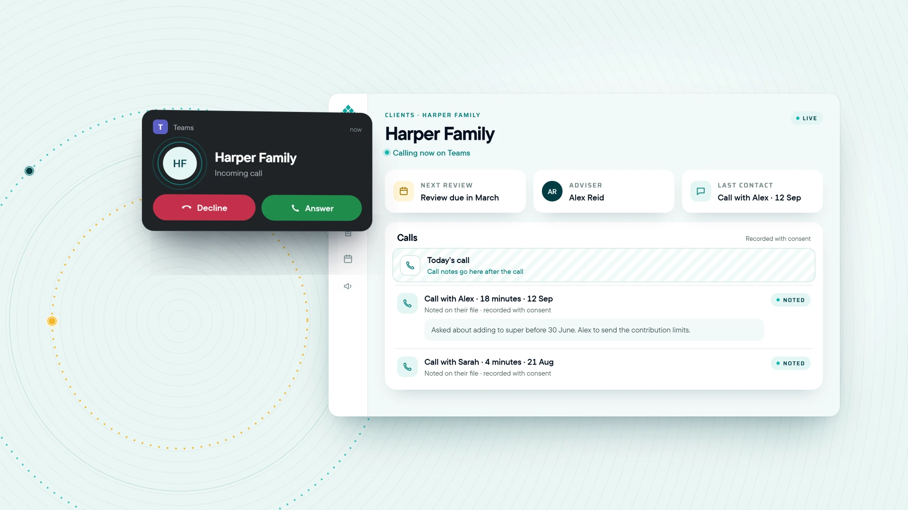

Microsoft Teams Phone for financial advisers: getting every call onto the client file
Moving the phones to Teams is the easy part. What matters is what happens to the call once it ends.

Should a financial advice firm use Microsoft Teams Phone?
Microsoft Teams Phone for financial advisers makes sense when the firm already runs on Microsoft 365: calls sit in the same app as meetings and chat. Each user needs a Teams Phone licence and a connection to the phone network. The firm also needs a plan for numbers, routing, recording consent, matching callers to clients and checking call notes.
- Teams Phone needs two things per user: a Teams Phone licence and a connection to the phone network.
- A phone number is a clue to who’s calling, not proof: confirm identity and authority before acting.
- Plan what happens after the call, from consent to reviewed note to assigned task, before you move the numbers.
Why are advice firms moving their phones to Microsoft Teams?
A client rings reception, gets transferred, and talks to the adviser for ten minutes from the car. They mention they’ve sold an investment property. Three months later, at the review, they say, “I told you on the phone.” They did. It just never made it to the file.
That’s the real case for Microsoft Teams Phone for financial advisers. Most advice firms already run on Microsoft 365. Putting the phones on Teams means calls happen in the same place as meetings, chat and email, on the desktop, a mobile or a desk phone. Microsoft also supports call queues and auto attendants for reception.
But a dial pad in Teams doesn’t put the call on the client’s file. That part needs planning, and it’s where advice firms get the most value.
How does Teams Phone connect to the phone network?
Microsoft documents four ways to connect Teams to the public phone network. In every case, each user needs a Teams Phone licence and a connection from a phone service provider.
| Option | Who provides numbers and support | Worth knowing |
|---|---|---|
| Calling Plan | Microsoft, as your operator. | The most Microsoft-managed option. Needs a Calling Plan licence. |
| Operator Connect | A certified third-party operator. | Numbers are managed in Teams. Check which operators serve Australia in Microsoft’s directory. |
| Teams Phone Mobile | A certified mobile operator. | One number across the user’s mobile and Teams. Supports user numbers only, not call queues or auto attendants. |
| Direct Routing | Any operator, through a certified Session Border Controller. | The most flexible. You, an integrator or a provider runs the connection. |
A firm can mix options, for example one for the main office number and reception, another for advisers who work mostly on mobiles. Having Teams doesn’t mean you already have the licences or connection for business calling, so get the full arrangement confirmed for your users and location.
What should happen after a client call?
For an advice firm, answering is step one. Plan the rest before you move a single number:
- Route. Agree how the main number, reception, transfers, missed calls and after-hours calls work.
- Identify. Bring up the likely client record, then confirm who is calling using your normal process.
- Capture, with consent. Tell the caller the call is recorded, and have a manual note process for when it isn’t.
- Check. The adviser reviews the drafted note and any proposed actions before they become the firm’s record.
- Assign. Each follow-up gets an owner and a due date, linked to the client.
Have a fallback for each step. When recording fails or a number can’t be matched, the call still needs a note and a next step.
Can a phone system match a caller to the right client?
It can find the likely record quickly, which saves the “sorry, who’s calling?” moment. But a number is a clue, not proof of identity. Households share landlines, partners borrow each other’s mobiles, and accountants and family members call on clients’ behalf.
A call comes into Aynub Financial, a fee-for-service practice in Kingaroy, from Arjun Shah’s mobile. The Shah household’s record appears on Mara Holloway’s screen as it rings. But it’s Priya calling, on Arjun’s phone, asking to increase Arjun’s super contributions before 30 June.
Mara confirms it’s Priya using the firm’s identity check. Because the instruction concerns Arjun’s account, she follows the firm’s authority process: she notes the request and books a short call with Arjun rather than acting on it. The call note records who called, what was asked, and that nothing was actioned yet. The follow-up task, call Arjun, has Mara’s name and a due date.
The household record helped Mara find the context in seconds. It didn’t decide who gave the instruction.
Can you record client calls on Teams?
Yes, with the right set-up and the right consent process. Settle the rules before you switch recording on:
- Have the right people confirm the call-recording laws that apply to your firm, your privacy obligations and your licensee’s policy.
- Decide how callers are told, what happens if they object, and how the note is taken instead.
- Agree who can access recordings, how long they’re kept and how they’re deleted.
The OAIC’s guidance on commercially available AI products says that whether people are told about a recording and transcript, and whether they consent, is relevant to whether collecting their information is lawful and fair. It also notes that recordings of people can contain sensitive information, which generally needs consent. Ask any supplier where audio and transcripts are stored and whether they’re used to train models.
AI-drafted call notes and emails are drafts. Check identity, figures, decisions and actions before filing or sending. Our guide to AI meeting notes for financial advisers has a file-note template you can use for calls too.
What should a Teams Phone pilot test?
Start with a small group and sample or authorised calls, on the devices and in the places your team actually works.
- Numbers: porting eligibility and timing, and a plan if the move takes longer than expected.
- Routing: reception, transfers, missed calls, voicemail and after-hours.
- Call quality: at the office, at home and on the road, with a fallback for outages.
- Client matching: shared, unknown and withheld numbers, and how a wrong match is fixed.
- Recording: consent wording, what happens when a caller declines, and which call types are covered.
- Access: who can play a recording and who can’t.
- Follow-up: correct a draft note, approve an action, and check the owner can find it.
- Support: who handles carrier faults, Microsoft settings and workflow problems.
What does moving to Teams Phone cost beyond the licence?
Ask for a quote that separates one-off set-up from monthly costs, and covers everything:
- Teams Phone licences, and Calling Plan licences if you use them.
- The phone connection, number charges and porting.
- Recording, storage and any AI note-taking.
- Desk phones or headsets, if your team needs them.
- Support, and any overlap with your old phone service during the move.
Then confirm who owns each kind of fault. A dropped call and a call note filed to the wrong client have different owners, but your team should report both in one place. For the wider picture of what software costs a practice, see our total cost checklist for advice software.
A next step for this week: list every number your firm publishes, who answers it, and where calls on it are noted today. That list is the start of your Teams Phone plan.
How Bunya Voice puts calls on the client’s file
Bunya Voice puts your firm’s phones on Microsoft Teams. When a client rings, the caller is matched to their record in Command Centre and it’s on screen as the phone rings. Calls are recorded with consent and noted on the client’s file. If your firm doesn’t take calls in Teams yet, we set up Teams Phone for you.
Voice works with Meeting Notes, which covers Teams calls as well as meetings: the file note, actions and follow-up email are drafted, and the adviser checks them before anything is filed or sent. Every Bunya starts with Command Centre, from $3 per client household a month, inside your own Microsoft 365. Add Bunya Voice as an app when you’re ready. Less time chasing call notes, more time on the call.

Common questions
Can we keep our existing business phone number on Teams?
Often, but it depends on the number, your current provider and the connection option you choose. Confirm porting eligibility and timing, and keep the old service running until the new one is tested.
Does Microsoft 365 include Teams Phone?
Don’t assume it does. Users need a Teams Phone licence plus a connection to the phone network, through Microsoft or a phone provider. Have your provider check your current licences.
Can Teams Phone work on advisers’ mobiles?
Yes. Teams Phone calls can be made and taken in the Teams app on a mobile, and Teams Phone Mobile can give a user one number across their mobile and Teams. Test call quality where your advisers actually work.
Can reception still answer the main number and transfer calls?
Yes, with call queues and auto attendants, which are supported by Calling Plan, Operator Connect and Direct Routing. Teams Phone Mobile supports user numbers only, so plan reception separately if you use it.
Do we need desk phones to use Teams Phone?
No. Calls can be made and taken in the Teams app on a computer or mobile. Certified Teams desk phones are an option for people who prefer a handset, such as reception.
How is a phone system different from AI meeting notes?
The phone system routes and connects calls. Meeting-note tools draft a record of what was said. Advice firms get the most value when the two are joined, so each call ends with a checked note and an owned next step.
Sources and scope
- Microsoft Learn: PSTN connectivity options for Microsoft Teams Checked 11 November 2026
- OAIC: Guidance on privacy and the use of commercially available AI products Checked 11 November 2026
General information for planning, not legal, privacy or telecommunications advice; confirm licensing, recording rules and your licensee’s requirements for your firm.